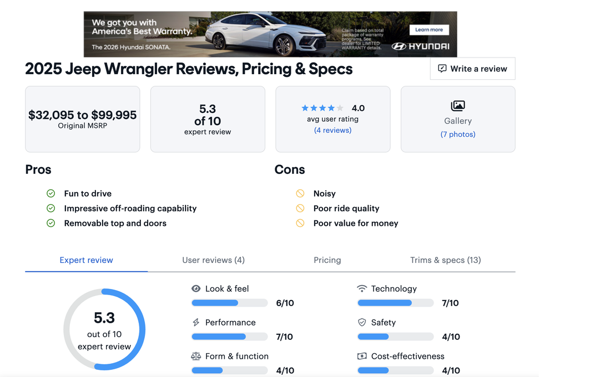
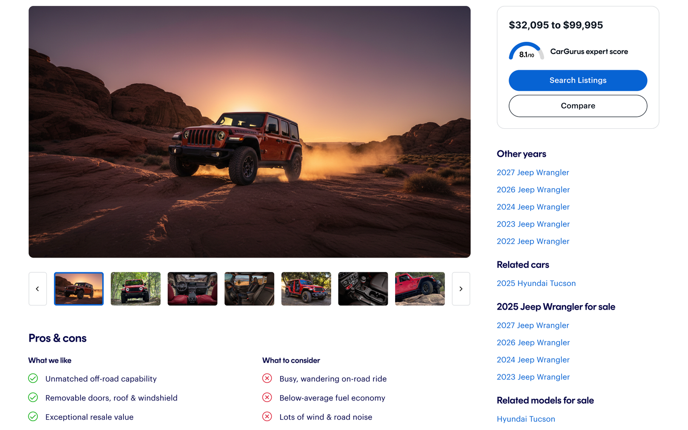
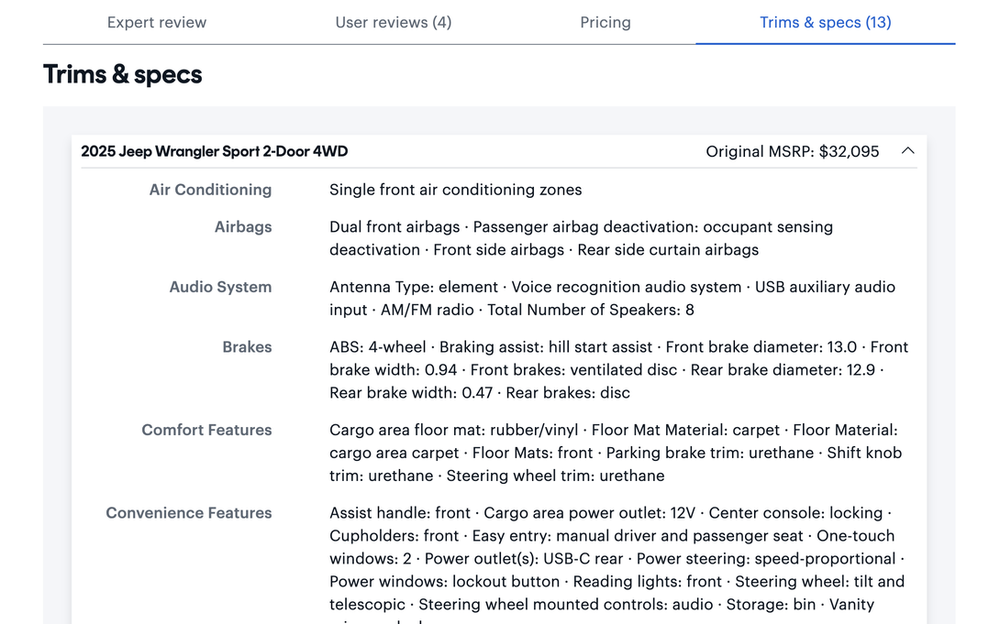
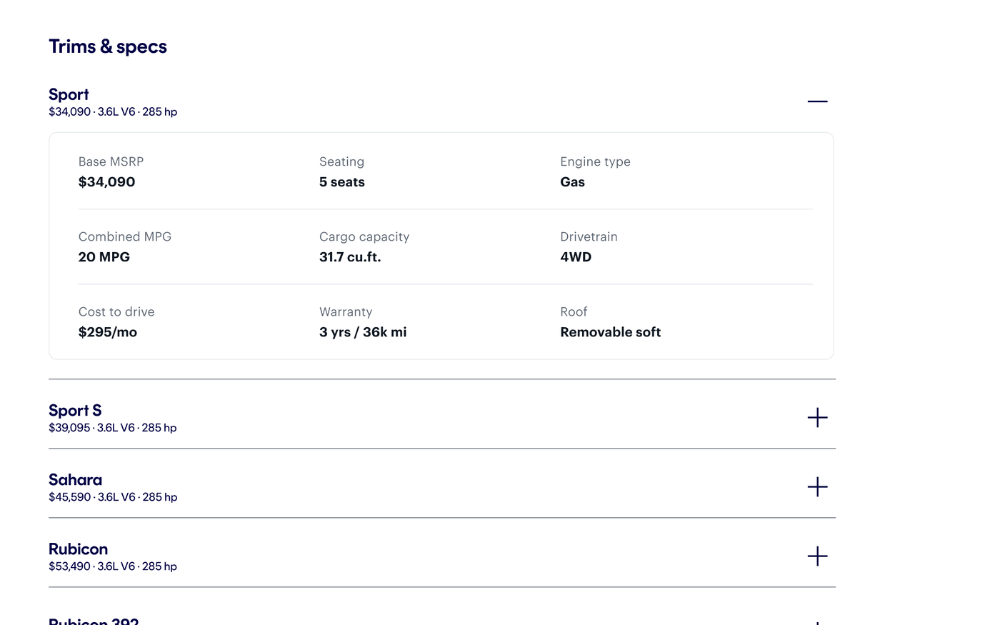
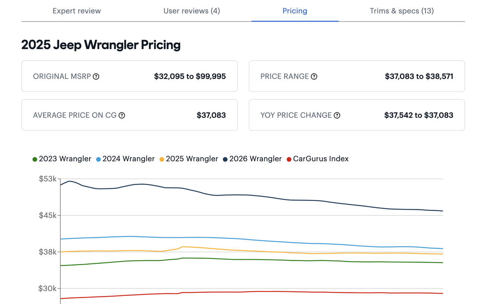
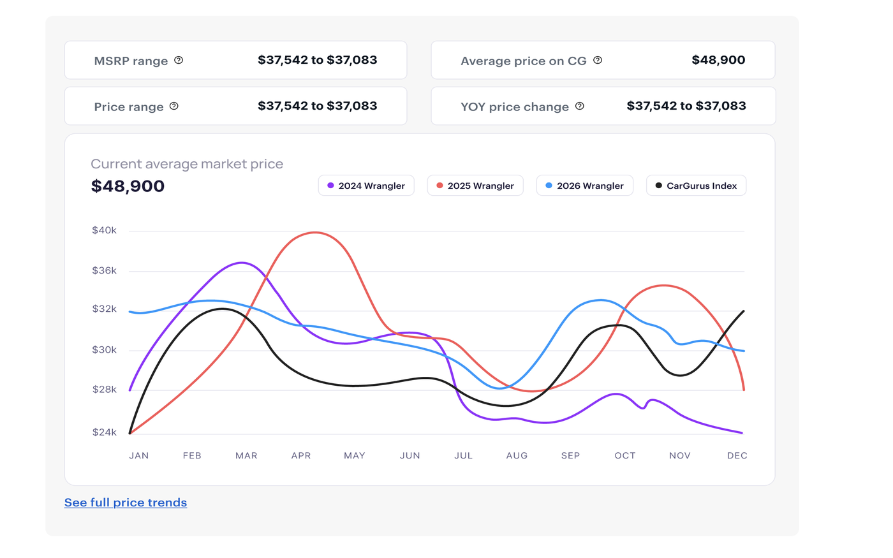

Redesigning CarGurus' Test Drive Review pages to balance SEO requirements with a clearer, more trustworthy research experience for car shoppers.
A page built for search engines, redesigned for the people who actually land on it.
As a UX Design Intern at CarGurus in Summer 2026, I took on a redesign of the Test Drive Review (TDR) page for the SEO team, the long-form page shoppers land on when researching a specific car model. The existing page felt dated and undifferentiated: content was densely packed with little visual hierarchy, so everything competed for attention instead of guiding shoppers to what mattered most.
My redesign preserved every piece of content the SEO team relies on for search ranking, while giving the page a modernized visual language consistent with CarGurus' existing design system. Rather than introducing new patterns, I leaned on components already established across the product to give the same information a clear, scannable hierarchy.
Working with the SEO team meant a lot of the page's content and structure were fixed for search ranking purposes, so this was less a from-scratch rebuild and more a structural and visual overhaul. I started by auditing CarGurus' own design system to see what components already existed for ratings, pricing, and comparisons, then looked at competitor research sites to see how they handled similar density.
A large hero image with a gallery carousel directly below it, a pattern borrowed from CarGurus' own Vehicle Detail Pages (VDP), giving the page a much stronger visual first impression.
Kept the existing right rail format, but added a new box up top with pricing, expert score, and Search Listings and Compare buttons, placed above the original external links.
Added a Shorts section at the bottom of the page to keep shoppers engaged longer and surface CarGurus' video content in a quick, visual format.
The current live page next to the redesign, section by section.






The redesign went through several rounds of stakeholder review and was approved by both engineering and PM. It hasn't shipped to production yet, and a mobile version is still in progress.
Completing the responsive layout for shoppers researching on the go.
Engineering implementation of the approved desktop design.
Measuring impact on engagement and time on page once it ships.